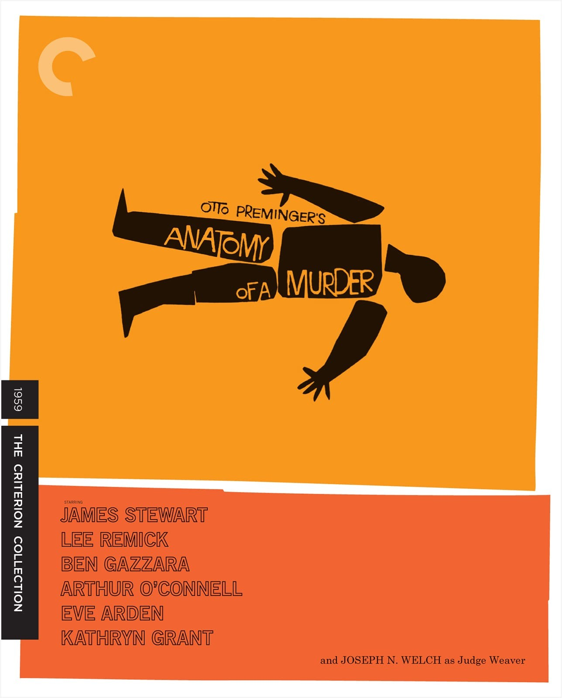
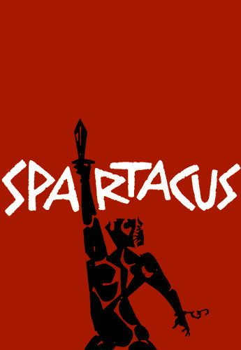
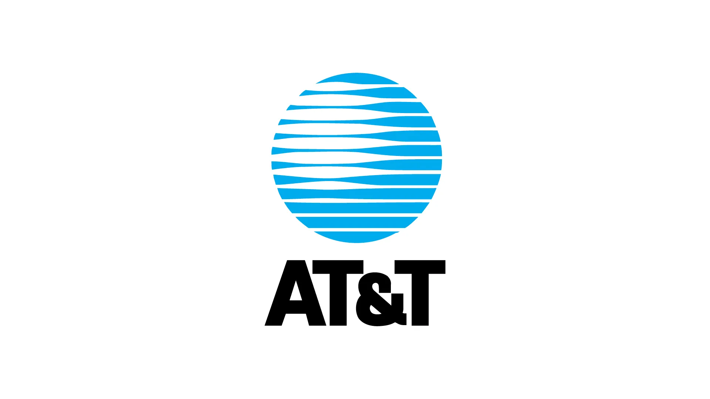
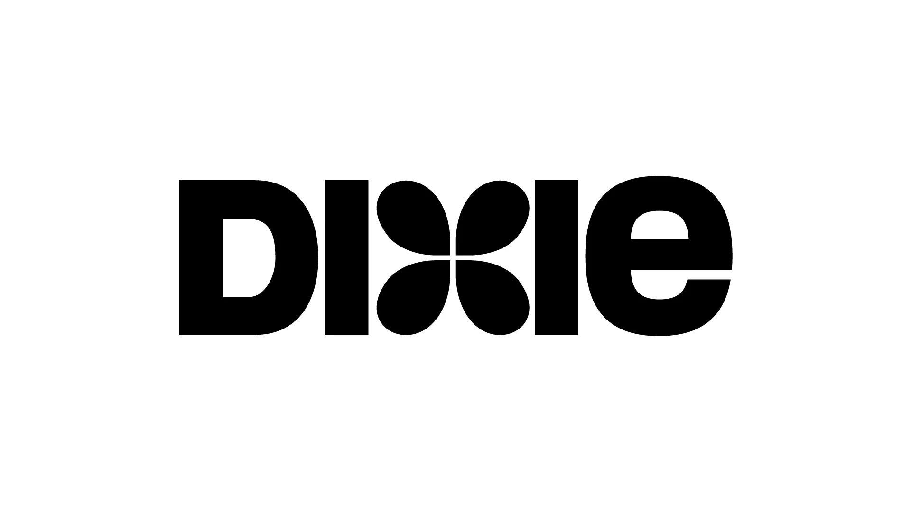

Obras cinematográficas

Cartel West Side Story
1961-Saul Bass

Cartel Anatomy of a Murder
1959-Saul Bass

Cartel Grand Prix
1966-Saul Bass

Cartel One Two Three
1961-Saul Bass

Cartel Spartacus
1960-Saul Bass

Cartel Such Good Friends
1971-Saul Bass
Obras Corporativas

Logo ATT&T
1983-Saul Bass

Logo Dixie
1969-Saul Bass

Logo Girl Scouts
1978-Saul Bass

Logo Lawry's
1959-Saul Bass

Logo Airlines
1974-Saul Bass

Logo Warner Communication
1972-Saul Bass